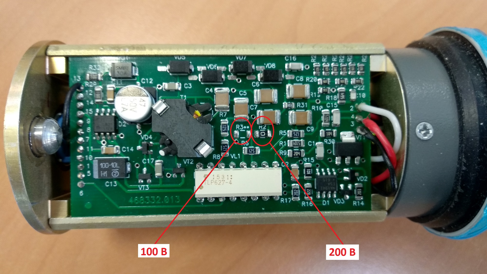
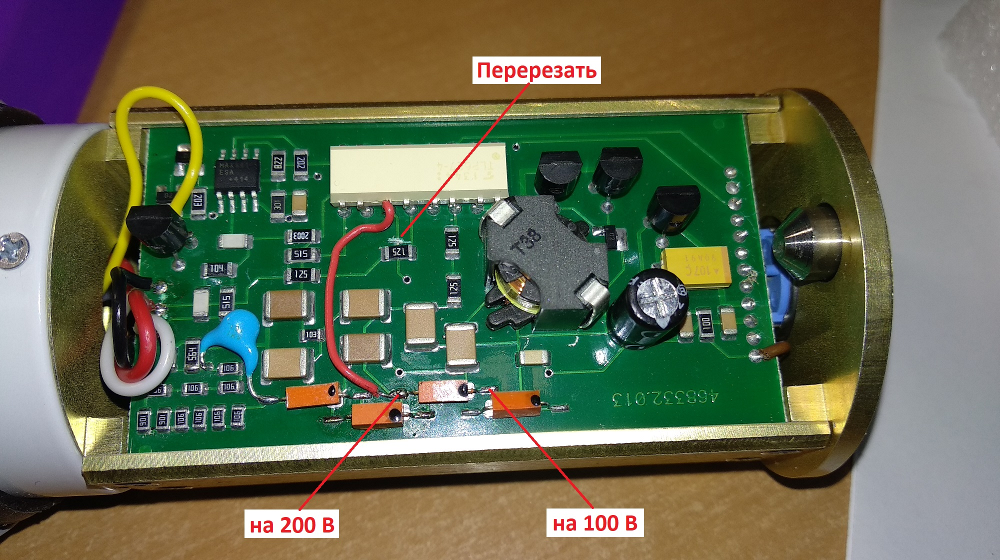

БДКГ-02. Поменять напряжение 100 → 200 вольт
Если блок не прошел линейку по точкам, как вариант, можно попробовать поменять напряжение с 200 В на 100 В. С другой стороны, старые (ремонтные) БД работали на 100 В, поэтому, если такой блок не прошел линейку, можно попробовать поменять напряжение со 100 В на 200 В. Вообще статистика показывает, что чаще хорошо проходят линейку блоки с 200 вольтами, поэтому применение такого напряжения более оправдано.
Так как исполнений плат было несколько, соответственно существует несколько методов доработки:
- Новые платы, самый простой вариант: напряжение регулируется установкой нулевого резистора на соответствующие контактные площадки, 200 В — R2, 100 В — R3: 
- Старый вариант, самый неудобный: нужно перерезать дорожку (ремонтные БД чаще всего будут приходить с уже перерезанной дорожкой) и запаять провод от 11-ой ноги до нужного диода (см. рисунок): 
- Промежуточный вариант: аналогичен второму варианту, но уже не нужно перерезать дорожку, для 100 В нужно отпаять нулевой диод и запаять провод от 11-ой ноги до соответствующего диода. На 200 В резистор оставить на месте, никаких проводов запаивать не нужно: